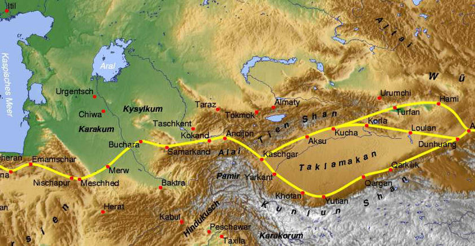
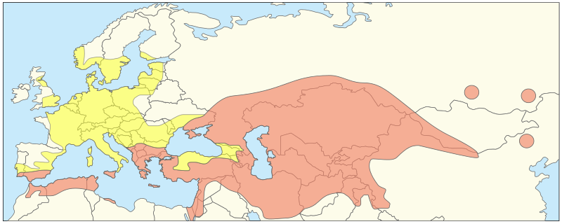

Tulipani se uglavnom distribuiraju duž pojasa koji odgovara širini od 40 ° sjeverno, od jugoistoka Europe (Grčka, Albanija, sjeverna Makedonija, Kosovo, južna Srbija, veći dio Rumunjske, Ukrajine, Rusije) i Turske na zapadu, preko Levanta ( Sirija, Izrael, palestinski teritoriji, Libanon i Jordan) i Sinajski poluotok. Odatle se proteže na istok kroz Jerevan, (Armenija) i Baku (Azerbajdžan) te na istočnoj obali Kaspijskog mora kroz Turkmenistan, Buharu, Samarkand i Taškent (Uzbekistan), do istočnog kraja lanca u Pamir-Alaju i Planine Tien-Shan u središnjoj Aziji, koje čine središte raznolikosti.
Dalje na istoku, Tulipa se nalazi na zapadu Himalaje, južnog Sibira, Unutarnje Mongolije i sve do sjeverozapada Kine. Iako su vlasti izjavile da nijedan tulipan zapadno od Balkana nije domaći, naknadna identifikacija Tulipa sylvestris subsp. australis kao porijeklom s Pirenejskog poluotoka i susjedne sjeverne Afrike pokazuje da bi to moglo biti pojednostavljenje.
Uz ove regije na zapadu tulipani su identificirani u Grčkoj, Cipru i na Balkanu. Na jugu Iran ima najdalji opseg, dok je sjeverna granica Ukrajina. Iako su tulipani također u većem dijelu Mediterana i Europe, ove regije nisu dio prirodne rasprostranjenosti. Tulipane su u Europu donijeli putnici i trgovci iz Anadolije i Srednje Azije radi uzgoja, odakle su pobjegli i naturalizirani (vidi kartu). Na primjer, manje od polovice vrsta koje se nalaze u Turskoj zapravo su domaće. Njih se naziva neo-tulipaama.
Tulipani su autohtoni u planinskim područjima s umjerenom klimom, gdje su uobičajeni element stepske i zimi kišne mediteranske vegetacije. Uspijevaju u klimatskim uvjetima s dugim, hladnim izvorima i suhim ljetima. Tulipani se najčešće nalaze na livadama, stepama i špartalima, ali se također unose u polja, voćnjake, uz ceste i napuštene vrtove.

